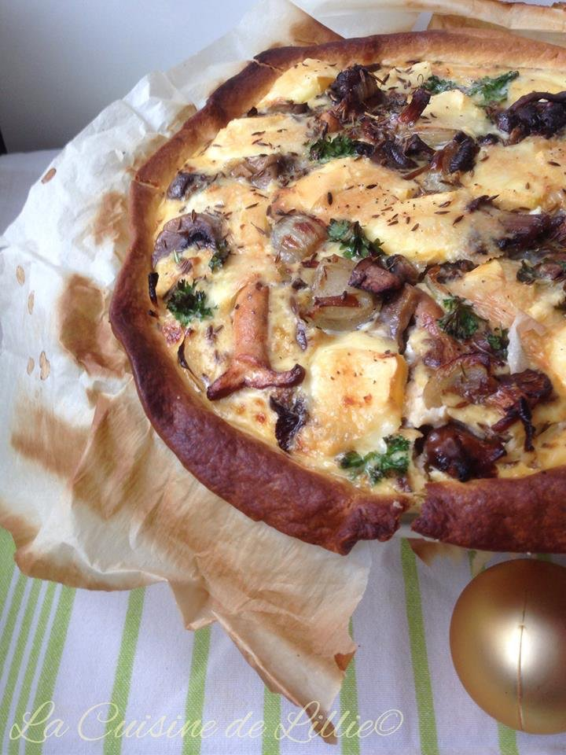

Tarte champignons reblochon
Ingredients
×
- 1 pâte brisée
- 500 g de champignons forestiers
- 4 oignons
- 1 gousse d'ail
- sel
- poivre
- persil
- 0.5 reblochon
- 2 oeufs
- 25 cl de crème
- cumin

Préparation
Étape 1
Préchauffer le four à 200ºC et précuire 1 pâte brisée 15min.
Étape 2
Rissoler 500 g de champignons forestiers, 4 oignons et 1 gousse d'ail. Ajouter du sel, du poivre et du persil, et cuire jusqu’à évaporation complète du liquide.
Étape 3
Gratter la croûte de 0.5 reblochon et le couper en cubes.
Étape 4
Battre 2 oeufs avec 25 cl de crème, du sel, du poivre et une belle poignée de cumin.
Étape 5
Garnir le fond de tarte avec les légumes, verser l’appareil et terminer par le reblochon. Cuire 25min à 180ºC.